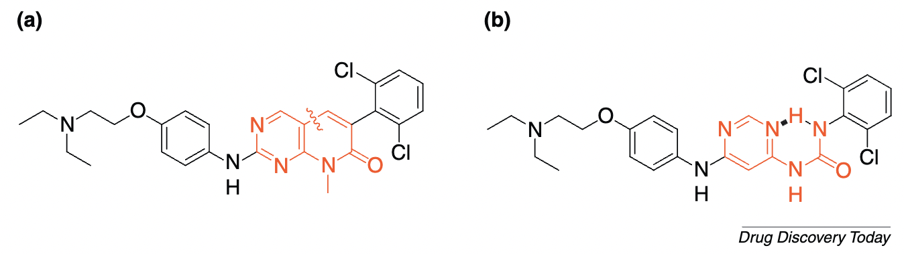
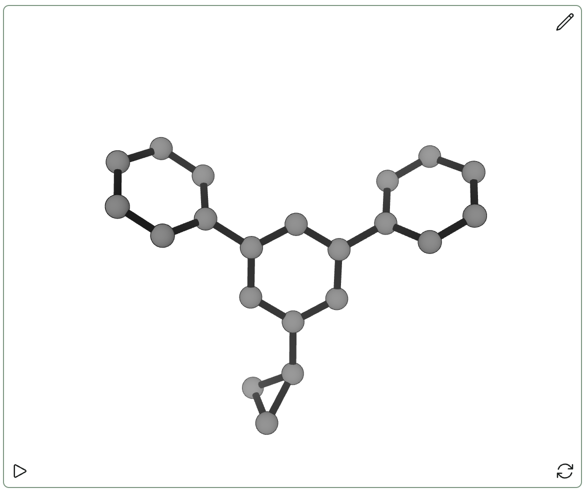
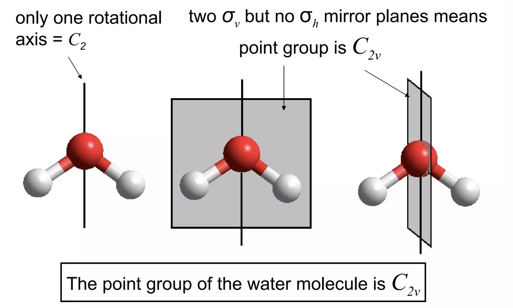

Abhishaike Mahajan recently wrote an excellent piece on how generative ML in chemistry is bottlenecked by synthesis (disclaimer: I gave some comments on the piece, so I may be biased). One of the common reactions to this piece has been that self-driving labs and robotics will soon solve this problem—this is a pretty common sentiment, and one that I’ve heard a lot.
Unfortunately, I think that the strongest version of this take is wrong: organic synthesis won’t be “solved” by just replacing laboratory scientists with robots, because (1) figuring out what reactions to run is hard and (2) running reactions is even harder and (3) we need scientific advances to fix this, not just engineering.
Predicting What Reactions To Run Is Hard
Organic molecules are typically made through a sequence of reactions, and figuring out how to make a molecule involves both the strategic question of which reactions to run in what order and the tactical question of how to run each reaction.
There’s been a ton of work on both of these problems, and it’s certainly true that computer-assisted retrosynthesis tools have come a long way in the last decade! But retrosynthesis is one of those problems that’s (relatively) easy to be good at and almost impossible to be great at. In part, this is because data in this field tends to be very bad: publications and patents are full of irreproducible or misreported reactions, and negative results are virtually never reported. (This post by Derek Lowe is a good overview of some of the problems that the field faces.)
But also, the problems are just hard! I got the chance to try out one of the leading retrosynthesis software packages back in my career as an organic chemist, and when we fed it some of the tough synthetic problems we were facing, it gave us all the logical suggestions that we had already tried (unsuccessfully) and then began suggesting insane reactions to us. I can’t really blame the model for not being able to invent new chemistry—but this illustrates the limits of what pure retrosynthesis can accomplish, absent new scientific discoveries.
The tactical problem of optimizing reaction conditions is also difficult. In cases where there are a lot of continuous variables (like temperatures or concentrations), conventional optimization methods like design-of-experiments can work well—but where reagents or catalysts are involved, optimization becomes significantly more challenging. Lots of cheminformatics/small-data ML work has been done in this area, but it’s still not straightforward to reliably take a reaction drawn on paper and get it to work in the lab.
Running Reactions Is Even Harder
All of the above problems are, in principle, solvable. Where I think robotics is likely to struggle even more is in the actual execution of these routes. Synthetic organic chemistry is an arcane and specialized craft that typically requires at least five years of training to be decent at—most published reaction procedures assume that the reader is themselves a trained organic chemist, and omit most of the “obvious” details that are needed to unambiguously specify a sequence of steps. (The incredibly detailed procedures in Organic Syntheses illustrate just how much is missing from the average publication.)
My favorite illustration of how irreproducible organic chemistry can be is BlogSyn, a brief project that aimed to anonymously assess how easily published reactions could be reproduced. The second BlogSyn post found that a reported olefination of pyridine could not be reproduced—the original author of the paper, Jin-Quan Yu (Scripps) responded, and the shape of reaction tube was ultimately found to be critical to reaction success.
The third BlogSyn post found that an IBX-mediated benzylic oxidation reported by Phil Baran (also of Scripps) could not be reproduced at all as written. Phil and his co-authors responded pretty aggressively, and after several weeks of back-and-forth it was ultimately found that the reaction could be reproduced after modifying virtually every parameter. A comment from Phil’s co-author Tamsyn illustrates some of the complexities at play:
There is in [BlogSyn’s] discussion a throw away comment about the 2-methylnaphthalene not being volatile. Have you never showered and then left your hair to dry at room temperature? – water evaporates at RT, just as 2-methylnaphthalene does at 95 ºC. I suggest to you that at the working temperatures of this reaction, the biggest problem may be substrate evaporation (or “hanging out” on the colder parts of the flask as Phil said)... We need fluorobenzene to reflux in these reactions and in so-doing wash substrate back into the reaction from the walls of the vessel, but it clearly slows/inhibits the reaction also – so, we need to tune this balance carefully and with patience. Scale will have a big influence on how well this process works.
Tamsyn is, of course, right—volatile substrates can evaporate, and part of setting up a reaction is thinking about the vapor pressure of your substrates and how you can address this. But this sort of thinking requires a trained chemist, and isn’t easily automated. There are a million judgment calls to make in organic synthesis—what concentration to use, how quickly to add the reagent, how to work up the reaction, what extraction solvent to use, and so on—and it’s hard enough to teach first-year graduate students how to do all this, let alone robots. Perhaps at the limit as robots achieve AGI this will be possible, but for now these remain difficult problems.
We Need Scientific Advances To Fix This
What can be done, then?
From a synthetic point of view, we need more robust reactions. Lots of academics work on reaction development, but the list of truly reliable reactions remains miniscule: amide couplings, Suzuki couplings, addition to Ellman auxiliaries, SuFFEx chemistry, and so on. From a practical point of view, every reaction like this is worth a thousand random papers with a terrible substrate scope (Sharpless said it better in 2001 than I ever could; see also this 2015 study about how basically no new reactions are used in industry). Approaches like skeletal editing are incredibly exciting, but there’s a limit to how impactful any non-general methodology can be.
Perhaps even more important is finding better methods for reaction purification. Purification is one of those topics which doesn’t get a lot of academic attention, but being able to efficiently automate purification unlocks a whole new set of possibilities. Solid-phase synthesis (which makes purification as simple as rinsing off some beads) has always seen some amount of use in organic chemistry, but a lot of commonly-used reactions aren’t compatible with solid support: either new supports or new reactions could address this problem. There are also cool approaches like Marty Burke’s “catch-and-release” boronate platform which haven’t yet seen broad adoption.
Ultimately, I share the dream of the robotics enthusiasts: if we’re able to make organic synthesis routine, we can stop worrying about how to make molecules and start thinking about what to make! I’m very optimistic about the opportunity of new technologies to address synthetic bottlenecks and enable higher-throughput data generation in chemistry. But getting to this point will take not only laboratory automation but also a ton of scientific progress in organic chemistry, and the first step in solving these problems is actually taking them seriously and recognizing that they’re unsolved.
Thanks to Abhishaike Mahajan and Ari Wagen for helpful comments about this post.
I've been playing around with generating non-equilibrium conformations by molecular dynamics recently, and I've been thinking about how to best parse the outputs of a dynamics simulation. A technique I've seen quite often in the literature is "choose a dissimilar subset of conformers by RMSD"—for instance, here's what the SPICE paper says:
For each of the 677 molecules, the dataset includes 50 conformations of which half are low energy and half are high energy. To generate them, RDKit 2020.09.3 was first used to generate 10 diverse conformations. Each was used as a starting point for 100 ps of molecular dynamics at a temperature of 500 K using OpenMM 7.6 and the Amber14 force field. A conformation was saved every 10 ps to produce 100 candidate high energy conformations. From these, a subset of 25 was selected that were maximally different from each other as measured by all atom RMSD.
This makes a good amount of sense: you want to choose conformers which cover as much chemical space as possible so that you get information about the PES as efficiently as possible, and RMSD is a cheap and reasonable way to do this. But how do you actually do this in practice? Nothing super helpful came up after a quick Google search, so I wrote a little script myself:
import cctk
import numpy as np
from sklearn.cluster import AgglomerativeClustering
import sys
import tqdm
import copy
e = cctk.XYZFile.read_file(sys.argv[1]).ensemble
molecules = e.molecule_list()
rmsd_matrix = np.zeros((len(molecules), len(molecules)))
comparison_atoms = molecules[0].get_heavy_atoms()
def compute_rmsd(mol1: cctk.Molecule, mol2: cctk.Molecule) -> float:
geom1 = copy.deepcopy(mol1.geometry[comparison_atoms])
geom1 -= geom1.mean(axis=0)
geom2 = copy.deepcopy(mol2.geometry[comparison_atoms])
geom2 -= geom2.mean(axis=0)
return cctk.helper_functions.compute_RMSD(geom1, geom2)
for i in tqdm.tqdm(range(len(molecules))):
for j in range(i + 1, len(molecules)):
rmsd_matrix[i, j] = compute_rmsd(molecules[i], molecules[j])
rmsd_matrix[j, i] = rmsd_matrix[i, j]
clustering = AgglomerativeClustering(
n_clusters=50,
metric="precomputed",
linkage="average"
)
clustering.fit(rmsd_matrix)
selected_molecules: list[int] = []
for cluster_id in range(50):
cluster_indices = np.where(clustering.labels_ == cluster_id)[0]
selected_molecule = cluster_indices[
np.argmin(rmsd_matrix[cluster_indices].sum(axis=1))
]
selected_molecules.append(selected_molecule)
e2 = cctk.ConformationalEnsemble()
for idx in selected_molecules:
e2.add_molecule(molecules[idx])
cctk.XYZFile.write_ensemble_to_file(sys.argv[2], e2)
print("done!")
This script uses agglomerative clustering to sort conformations into clusters, but could easily be adapted to work with other algorithms.
To run this script, simply paste into into a file (choose_dissimilar.py) and run:
python choose_dissimilar.py input.xyz output.xyz
This will dump 50 output conformers into output.xyz. Hopefully this saves someone some time... happy computing!
Scientific software can be confusing, particularly when you're doing something that the software isn't primarily intended for.
I often find myself wanting to run quick-and-dirty molecular dynamics simulations on small organic molecules, but I've struggled to find an easy way to do this using open-source tools like OpenMM.
This is particularly frustrating since I feel like I should be equipped to succeed at this task:
Yet despite all this, I've probably tried and failed to use OpenMM for my research a half-dozen times over the past five years (evidence). I always get bogged down somewhere: I don't have PDB files for my compounds, or I can't figure out how to get the forcefield parameters right for a small molecule, or I just get lost in a sea of similar-sounding classes and objects. Part of the problem here is that all the "intro to MD" tutorials seem to assume that you're hoping to run an MD simulation on a protein from the PDB—so if you have an .xyz file, it's not obvious how to proceed.
Nevertheless, I've finally succeeded. Here's the code, with minor annotations interspersed:
from openff.toolkit import Molecule, Topology
from openmm import *
from openmm.app import *
import nglview
import mdtraj
import matplotlib.pyplot as plt
import numpy as np
import openmoltools
import tempfile
import cctk
import openmmtools
import math
from random import random, randint
from sys import stdout
import pandas as pd
from rdkit import Chem
from rdkit.Chem import AllChem
from openmmforcefields.generators import SMIRNOFFTemplateGenerator
%config InlineBackend.figure_format='retina'
Already, we're off to a complex start: we need OpenFF, OpenMM, openmoltools, openmmtools, and openmmforcefields
(not to mention nglview and mdtraj). There's a broader point to be made here about the state of scientific software and how this relates to academic incentive structure, but I digress...
smiles = "c1cc(F)ccc1O"
def generate_forcefield(smiles: str) -> ForceField:
""" Creates an OpenMM ForceField object that knows how to handle a given SMILES string """
molecule = Molecule.from_smiles(smiles)
smirnoff = SMIRNOFFTemplateGenerator(molecules=molecule)
forcefield = ForceField(
'amber/protein.ff14SB.xml',
'amber/tip3p_standard.xml',
'amber/tip3p_HFE_multivalent.xml'
)
forcefield.registerTemplateGenerator(smirnoff.generator)
return forcefield
def generate_initial_pdb(
smiles: str,
min_side_length: int = 25, # Å
solvent_smiles = "O",
) -> PDBFile:
""" Creates a PDB file for a solvated molecule, starting from two SMILES strings. """
# do some math to figure how big the box needs to be
solute = cctk.Molecule.new_from_smiles(smiles)
solute_volume = solute.volume(qhull=True)
solvent = cctk.Molecule.new_from_smiles(solvent_smiles)
solvent_volume = solvent.volume(qhull=False)
total_volume = 50 * solute_volume # seems safe?
min_allowed_volume = min_side_length ** 3
total_volume = max(min_allowed_volume, total_volume)
total_solvent_volume = total_volume - solute_volume
n_solvent = int(total_solvent_volume // solvent_volume)
box_size = total_volume ** (1/3)
# build pdb
with tempfile.TemporaryDirectory() as tempdir:
solute_fname = f"{tempdir}/solute.pdb"
solvent_fname = f"{tempdir}/solvent.pdb"
system_fname = f"system.pdb"
smiles_to_pdb(smiles, solute_fname)
smiles_to_pdb(solvent_smiles, solvent_fname)
traj_packmol = openmoltools.packmol.pack_box(
[solute_fname, solvent_fname],
[1, n_solvent],
box_size=box_size
)
traj_packmol.save_pdb(system_fname)
return PDBFile(system_fname)
def smiles_to_pdb(smiles: str, filename: str) -> None:
""" Turns a SMILES string into a PDB file (written to current working directory). """
m = Chem.MolFromSmiles(smiles)
mh = Chem.AddHs(m)
AllChem.EmbedMolecule(mh)
Chem.MolToPDBFile(mh, filename)
forcefield = generate_forcefield(smiles)
pdb = generate_initial_pdb(smiles, solvent_smiles="O")
system = forcefield.createSystem(
pdb.topology,
nonbondedMethod=PME,
nonbondedCutoff=1*unit.nanometer,
)
This code turns a SMILES string representing our molecule into an OpenMM System, which is a core object in the OpenMM ecosystem. To do this, we have to do a lot of shenanigans involving figuring out how many solvent molecules to add, calling PACKMOL, etc. One of the key steps here is the SMIRNOFFTemplateGenerator (documented here), which uses one of the recent OpenFF forcefields to describe our chosen molecule.
# initialize Langevin integrator and minimize
integrator = LangevinIntegrator(300 * unit.kelvin, 1 / unit.picosecond, 1 * unit.femtoseconds)
simulation = Simulation(pdb.topology, system, integrator)
simulation.context.setPositions(pdb.positions)
simulation.minimizeEnergy()
# we'll make this an NPT simulation now
system.addForce(MonteCarloBarostat(1*unit.bar, 300*unit.kelvin))
simulation.context.reinitialize(preserveState=True)
checkpoint_interval = 100
printout_interval = 10000
# set the reporters collecting the MD output.
simulation.reporters = []
simulation.reporters.append(DCDReporter("traj_01.dcd", checkpoint_interval))
simulation.reporters.append(
StateDataReporter(
stdout,
printout_interval,
step=True,
temperature=True,
elapsedTime=True,
volume=True,
density=True
)
)
simulation.reporters.append(
StateDataReporter(
"scalars_01.csv",
checkpoint_interval,
time=True,
potentialEnergy=True,
totalEnergy=True,
temperature=True,
volume=True,
density=True,
)
)
# actually run the MD
simulation.step(500000) # this is the number of steps, you may want fewer to test quickly
Here, we configure the settings that will be familiar to people who read MD textbooks. I've chosen to use a Langevin integrator/thermostat to control temperature, and added a Monte Carlo barostat to make this an NPT simulation (constant pressure & temperature). This isn't appropriate for all uses, but it means we don't have to worry about getting the box size exactly right. We also configure how we're going to save data from the simulation, and then the last line actually runs it (this might take a while if you don't have a GPU).
Once we've run this simulation, we can visualize the output and watch things wiggle around! The MDTraj trajectory is a pretty versatile object so you can do much more analysis here if you want to.
# build MDTraj trajectory
t = mdtraj.load("traj_01.dcd", top="init_01.pdb")
# visualize the trajectory - this works in jupyter at least
view = nglview.show_mdtraj(t)
view.clear_representations()
view.add_licorice()
view.add_unitcell()
view
NGLView is actually pretty great, except if you're forming or breaking bonds.
It's also good to check that the thermostat actually worked and nothing blew up:
# check that the thermostat is working
df = pd.read_csv("scalars_01.csv")
df.plot(kind="line", x='#"Time (ps)"', y="Temperature (K)")
This is probably laughably simple to an OpenMM expert, but it works well enough for me. Here's my current list of things I still don't know how to do:
Start with a specific set of 3D coordinates, not just a SMILES string. This is my biggest issue: it's not easy to specify the geometry of a supramolecular complex using SMILES strings, and while I feel that I ought to be able to modify one of these objects and supply the coordinate information directly, I'm not sure exactly how. (Relatedly, I've never gotten the hang of PDB files for small molecules.)
Fit specific torsions or interactions to high-level data—I see people do this in the literature, but I don't know how.
Frankly, run any more interesting sorts of simulations! Normal MD is way too slow for a lot of things, but enhanced sampling methods get complicated fast: I've done WHAM using my own software, but I don't really know how to do WHAM or metadynamics in other software packages.
Build or validate models of non-aqueous solvents. Can I just use this workflow to study, e.g., liquid HF? And how do I figure out if I have the right dipole moment or boiling point for liquid HF?
Still, I hope this script is a useful asset to the community, and helps other people not make the same mistakes I did.
Thanks to Dominic Rufa for answering some of my stupid questions.
Update: As of October 2024, you can now run DiffLinker calculations through Rowan, my computational chemistry startup. Read more about this in our newsletter!
Much molecular design today can be boiled down to “put the right functional groups in exactly the right places.” In catalysis, proper positioning of functional groups to complement developing charge or engage in other stabilizing non-covalent interactions with the transition state can lead to vast rate accelerations. A classic demonstration of this is Uyeda and Jacobsen’s enantioselective Claisen rearrangement, where a simple catalyst presents a guanidinium ion to stabilize an anionic region and an electron-rich arene to stabilize a cationic region. Together, these interactions lead to high enantioselectivity and a 250-fold rate increase over the background reaction.
I freely admit this choice of example is biased, but this is a great paper.
While putting the right functional groups in the right positions might sound easy, the underlying interactions are often exquisitely sensitive to distance, which makes finding the right molecular scaffold very challenging. Jeremy Knowles put this nicely in his 1991 perspective on enzyme catalysis:
Although it is too early to generalize, it is evident that in this case [triose phosphate isomerase] at least, the positioning of functionality at the active site of the enzyme needs to be quite precise if full catalytic potency is to be realized… The good news for catalyst engineers is that proper placement of appropriate groups in the right environment seems to be enough. The not-so-good news is that this placement must be very precise.
Proper positioning of various groups isn’t just a problem in catalysis—it’s also very important in drug design. Lots of topics in medicinal chemistry essentially boil down to a variant of the positioning problem:
Recent years have seen an explosion in the number of arene bioisosteres, i.e. “ways to connect two groups the same distance apart as an arene would without using any aromatic rings.” This is nice because you can use these bioisosteres to e.g. tune biophysical properties, like lipophilicity, solubility, and membrane permeability, while ideally not affecting the actual conformation of the molecule too much. Here’s a graphic from Chris Swain showing some options for replacing a 1,4-disubstituted arene:
Taken from this page.
(There's lots of work on this; see also the Baran Lab's great overview of bioisosteres.)
“Scaffold hopping” generally means switching the core of a molecule while preserving key interactions and substituents (although the term is a little vague). Scaffold hops often look for new structures that don’t suffer from the ADME/toxicity liabilities of the original structure, which necessitates finding a new core that positions substituents in the same way. Here's a nice example of a scaffold hop in a tyrosine kinase inhibitor, from a review by Hongmao Sun and co-workers:

(This is Figure 8 in the reference.)
Linker design has become incredibly important for PROTACs and other heterobifunctional molecules, as choosing a good linker is often key to drug efficacy (e.g.). Unfortunately there are a vast variety of potential linkers, and it’s far from obvious to figure out which one will best balance, affinity, bioavailability, stability, and other properties:
Taken from this review.
One of the toughest parts of fragment-based drug design is finding the right way to connect fragments which bind to different parts of the desired pocket. Here’s what Philine Kirsch and co-workers have to say about this:
Finding the right linker motif, which orients the individual fragment units in the favourable geometry in relation to each other without introducing too much flexibility whilst maintaining the binding poses of both fragments, can be very challenging. If successful, the combination of two fragments with rather low affinity could result in significantly higher affinity and has the potential to result in “superadditive” contributions of both binding motifs. The challenge in fragment linking is the exploration of the binding mode of both fragments and the identification of an optimal linker. Only in this case, the overall reduced so-called rigid body entropy translates into synergistically-improved affinity.
What’s hard about all these positioning problems is that finding a molecule that orients substituents in a given way is incredibly non-obvious: molecules are inherently discrete and atomic, making it hard to change a distance or angle by a precise percent. You can have two carbon atoms between your substituents, or you can have three carbon atoms, but you can’t have 2.5 carbon atoms. This makes prospective design very challenging: I can model my protein’s active site and figure out that I want a an ortho-pyridyl substituent and a tetrazole 8 Å apart at a 30º angle, but working backwards to an actual scaffold almost always requires a lot of trial and error.
A recent paper from Ilia Igashov and co-workers sets out to solve exactly this “inverse design” problem: given two substituents, can we use ML to find a linker that connects them in the desired orientation? Their solution is DiffLinker, a diffusion-based method that takes separate atomic fragments and generates a linker that connects them.
There’s been other work in this area, but the DiffLinker authors argue that their model stands out in a few ways. DiffLinker generally produces more synthetically accessible and drug-like molecules than competitor methods, although the relative ranking of models does change significantly from benchmark to benchmark. Also, they’re not limited to joining pairs of molecule structures: DiffLinker can perform “one-shot generation of the linker between any arbitrary number of fragments,” which lets them vastly outperform other models when linking three or more fragments.
For cases where fragments must be joined in a protein pocket, the authors train a pocket-conditioned model, and show that this model results in many fewer clashes than an unconstrained model. They can use this model to recapitulate known drug structures, which they demonstrate with a known HSP90 inhibitor derived from molecular fragments. (It’s worth noting that the authors got the desired inhibitor structure only 3 times out of 1000 DiffLinker predictions.) They also show that their protein-conditioned model produces molecules that have good binding affinity as assessed by docking (GNINA/Vina), with the huge caveat that docking scores are notoriously inaccurate.
a is the experimental fragments, b is the input to DiffLinker, c is the experimental inhibitor, and d is the DiffLinker-generated inhibitor. Not bad!
There’s still plenty of work that needs to be done here: for instance, the authors readily acknowledge that PROTACs are still too challenging:
While DiffLinker effectively suggests diverse and valid chemical structures in tasks like fragment linking and scaffold hopping, we have observed that generating relevant linkers for PROTAC-like molecules poses a greater challenge. The main difference between these problems lies on the linker length and the distance between the input fragments. While the average linker size in our training sets is around 8 atoms (5 for ZINC, 10 for GEOM, 10 for Pockets), a typical linker in a PROTAC varies between 12 and 20 atoms. It means that the distribution of linkers in PROTACs has different characteristics compared to the distributions of linkers provided in our training sets. Therefore, to improve the performance of DiffLinker in PROTAC design, one may consider retraining the model using more suitable PROTAC data.
DiffLinker is open-source and comes with pre-trained models, so I played around with it a bit myself to see how well it worked. I sketched out a classic meta-terphenyl scaffold, deleted the central phenyl ring, and then asked DiffLinker to connect the now-separated phenyl rings. I was hoping that DiffLinker would come up with one of Enamine’s cool suggestions for meta-arene bioisosteres, but in all five cases I just got back some variant on a benzene ring… which isn’t surprising in hindsight.

DiffLinker also doesn't output hydrogens, which is a little annoying.
Although I don’t think this version of DiffLinker is going to replace humans at any of the tasks I talked about above, this still seems like a pretty cool direction for generative chemical ML. I’m excited to see future versions of methods like DiffLinker that are able to generate predictions conditioned on other molecular properties to allow for guided exploration of molecular space. (For instance, it would have been nice to request fragments that were three-dimensional above, so as to avoid getting boring benzenes back.)
I also suspect that DiffLinker, like other generative chemical models, will increase the demand for accurate physics-based methods for refining and validating the output predictions. DiffLinker’s grasp of potential energy surfaces is presumably worse than DFT or other dedicated ML potentials, and a hybrid workflow where DiffLinker generates structures and a higher-quality method optimizes and scores them will probably be much more accurate than just DiffLinker alone. Generative AI is having a moment right now, but for better or worse I think “classic” molecular simulation is here to stay too.
Pure mathematics has all sorts of unexpected connections to other fields, and chemistry is no exception. One example of this is group theory: while I never delved deeply enough into math to actually study group theory as its own field, I've had to learn how to assign point groups to three-dimensional objects for several inorganic chemistry classes. This process, demonstrated below for water, basically entails finding all of the possible symmetry operations for a given molecule:

Finding the point group of water.
This might seem arcane but becomes quite important in several contexts. In computational chemistry, proper consideration of point groups and their corresponding symmetry numbers is needed to handle entropic effects correctly. Dan Singleton makes this point forcefully in his 2015 study of the Baylis–Hillman reaction (SI pp. S24–S25):
For an entropy calculation to be properly compared with experimental observations, it should allow for a
series of entropy effects that are not included in the entropies calculated from frequencies normally supplied
by electronic structure calculations. This includes allowance for symmetry numbers and the effects of
mixing of structures on entropy. The corrections are usually simple yet they are rarely done in computational
mechanistic studies. A rationalization of this is that the effects are small and often make no difference for
the results of greatest interest in papers. However, the effects can at times be quite large (see for example
Seal, P.; Papajak, E.; Truhlar, D. G. J. Phys. Chem. Lett.2012, 3, 264-271). Judging by papers where the
consideration of symmetry numbers and entropy of mixing would make a difference but is ignored (for one
example, see J. Chin. Chem. Soc.2001, 48, 193-200), the ideas are not as widely recognized as needed.
Why don't most people take symmetry into account? One reason is that while it's pretty easy to find the point group of a molecule by inspection, it's much harder to figure out how to do it programmatically. I ran into this issue writing code for Rowan, and was really pleased to find libmsym, a package that automatically finds the point group for a given molecule. (Here's the paper describing libmsym.) We've had great results using this library for Rowan's thermochemistry module.
Unfortunately, libmsym is now nine years old and we've also had problems with the code: in particular, I recently upgraded from an old Intel MacBook to a new M3 MacBook Pro, and there aren't any prebuild Apple Silicon-compatible wheels for libmsym on Pypi! Since this is an issue which other people have also faced with libmsym, and neither the original author nor the listed maintainer have responded to my emails, I decided to just fork the repository and fix this issue myself.
It took a bit more work than I was expecting (I ended up completely restructuring the package, rewriting all the CMake files, and moving the Python build to scikit-build-core), but I'm happy to share the final product, pymsym. pymsym should be compatible with any modern Linux or Mac architecture (thanks to cibuildwheel) and can be installed from Pypi. Simply run pip install pymsym.
All the original libmsym code is there, and I've also added an additional high-level Python API for quickly predicting point groups and symmetry numbers: